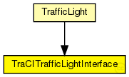

This documentation is released under the Creative Commons license
This documentation is released under the Creative Commons license(no description)
The following diagram shows usage relationships between types. Unresolved types are missing from the diagram. Click here to see the full picture.
| Name | Type | Description |
|---|---|---|
| TrafficLight | compound module | (no description) |
| Name | Value | Description |
|---|---|---|
| class | veins::TraCITrafficLightInterface | |
| display | i=block/layer |
| Name | Direction | Size | Description |
|---|---|---|---|
| logic | inout |
This documentation is released under the Creative Commons license